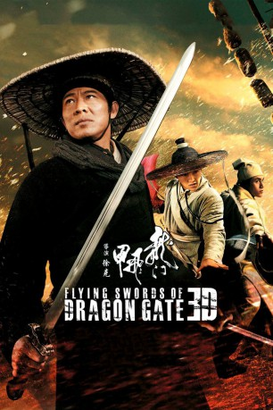

 
 IMDB-Wertung: 6.0 / 10
IMDB-Wertung: 6.0 / 10  Metascore:
Metascore: 
Korrupte Eunuchen terrorisieren China am Ende der Ming-Dynastie. Der Freiheitskämpfer Zhao Huai’an (Jet Li) lehnt sich gegen sie auf. Im Gasthaus am „Dragon Gate“ treffen Gut und Böse aufeinander. Ein Sandsturm unter dem Wirtshaus weht die Goldschätze einer uralten Stadt wieder an die Oberfläche und der Kampf beginnt, zumal auch noch eine Horde trinkfester mongolischer Krieger dazustößt.
Jahr: 2011
Dauer: 125 Minuten
FSK:
Land: China Studio: New KSMTonspuren: DTS - ,
Untertitel: Deutsch,
Auflösung: 1080p (1920x800) Größe: 8755 MB
Regisseur:  Hark Tsui
Hark Tsui
Drehbuch: Hark Tsui
Soundtrack: Xin Gu, Han Chiang Li, Wai Lap Wu
Darsteller:
Datei: X:\HD-Eastern-Classic(A-M)\Flying Swords of Dragon Gate (2011, FSK, 1920x800) 3D.mkv seit 09.12.2015
Festplatte: HD Eastern+Western
 Es gibt insgesamt 63 Filme in der Gruppe 'HD-Eastern-Classic(A-M)'
Es gibt insgesamt 63 Filme in der Gruppe 'HD-Eastern-Classic(A-M)'